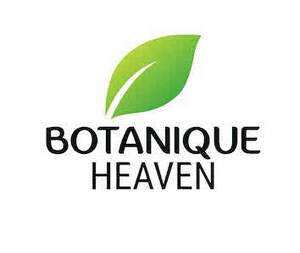

Trade Mark Journal No.2025/030 25 July 2025
UK00004235723 18 July 2025 (3,5,21,30)

- Class 3
- Eau-de-toilette; Safrol; Badian essence; Liquid foundation (mizu-oshiroi); Heliotropin; Quillaia bark for washing; Bark (Quillaia -) for washing; Heliotropine; Wave-set lotions; Creams (Cosmetic -); Cosmetic creams; Cosmetics and cosmetic preparations; Sunscreens [for cosmetic use]; Cosmetic moisturisers; Cosmetic soaps; Sunscreen [for cosmetic use]; Cosmetic facial lotions; Facial lotions [cosmetic]; Cosmetic soap; Lotions for cosmetic purposes; Cosmetic masks; Tonics [cosmetic]; Dyes (Cosmetic -); Cosmetic dyes; Facial creams [cosmetic]; Facial creams [for cosmetic use]; Cosmetic powder; Cosmetic preparations; Anti-aging creams [for cosmetic use]; Pencils (Cosmetic -); Cosmetic pencils; Facial cleansers [cosmetic]; Anti-ageing creams [for cosmetic use]; Cosmetic kits; Kits (Cosmetic -); Facial moisturisers [cosmetic]; Anti-wrinkle creams [for cosmetic use]; Lacquer for cosmetic purposes; Cosmetic skin fresheners; Pro-collagen for cosmetic purposes; Cosmetic creams for the skin; Skin creams [cosmetic]; Skin creams [for cosmetic use]; Henna for cosmetic purposes; Facial cream [for cosmetic use]; Serums for cosmetic purposes; Skin cleansers [cosmetic]; Skin balms [cosmetic]; Collagen for cosmetic purposes; Cosmetic tanning preparations; Cosmetic skin enhancers; Cosmetic hair lotions; Cleansing creams [cosmetic]; Cosmetic rouges; Facial scrubs [cosmetic]; Self-tanning preparations [cosmetic]; Facial toners [cosmetic]; Pomades for cosmetic purposes; Suncare lotions [for cosmetic use]; Lip coatings [cosmetic]; Skin cream [for cosmetic use]; After-sun lotions [for cosmetic use]; Skin whitening preparations [cosmetic]; Anti-ageing serums for cosmetic purposes; Cosmetic creams and lotions; Anti-wrinkle cream [for cosmetic use]; Toning creams [cosmetic]; Adhesives for cosmetic purposes; Cosmetic sun-protecting preparations; Astringents for cosmetic purposes; Cosmetic facial masks; Facial masks [cosmetic]; Acne cleansers, cosmetic; Glitter for cosmetic purposes; Cosmetic sunscreen preparations; Sunscreen creams [for cosmetic use]; Facial washes [cosmetic]; Lip stains for cosmetic purposes; Toners for cosmetic purposes; Cosmetic facial packs; Facial packs [cosmetic]; Geraniol for cosmetic purposes; Skin care lotions [cosmetic]; Cosmetic nail preparations; Cosmetic massage creams; Cosmetic suntan lotions; Retinol cream for cosmetic purposes; Eyelashes (Cosmetic preparations for -); Cosmetic preparations for eyelashes; Cosmetic suntan preparations; Skin toners [cosmetic]; Procollagen for cosmetic purposes; Cosmetic hand creams; Cosmetic products for the shower; Skin hydrators for cosmetic purposes; Cosmetic creams for skin care; Skin care creams [cosmetic]; Pencils for cosmetic purposes; Cosmetic eye gels; Gels for cosmetic purposes; Hair care creams [for cosmetic use]; Hair care lotions [for cosmetic use]; Cosmetic sun-tanning preparations; Exfoliating scrubs for cosmetic purposes; Hair tonics [for cosmetic use]; Tooth powders [for cosmetic use]; Cosmetic preparations for slimming purposes; Slimming purposes (Cosmetic preparations for -); Self tanning creams [cosmetic]; Skin care (Cosmetic preparations for -); Cosmetic preparations for skin care; Cosmetic nourishing creams; Ointments for cosmetic use; Skin conditioning creams for cosmetic purposes; Moisturising gels [cosmetic]; Moisturising skin lotions [cosmetic]; Suntan oils for cosmetic purposes; Self tanning lotions [cosmetic]; Cotton for cosmetic purposes; Softening cleanser [cosmetic]; Moisturising concentrates [cosmetic]; Essences for cosmetic purposes; Cosmetic face powders; Face powders [for cosmetic use]; Cosmetics; Lint for cosmetic purposes; Artificial nails for cosmetic purposes; Cosmetic eye pencils; Sun creams [for cosmetic use]; Removable tattoos for cosmetic purposes; Milk for cosmetic purposes.
- Class 5
- Nutraceuticals for use as a dietary supplement; Dietary supplement drinks; Vitamin supplement patches; Dietary supplements; Vitamin supplements; Nutritional supplements; Calcium tablets as a food supplement; Dietary supplement drink mixes; Probiotic supplements; Colostrum supplements; Flaxseed dietary supplements; Dietary supplements consisting of vitamins; Nutritional supplement meal replacement bars for boosting energy; Zinc supplement lozenges; Homeopathic supplements; Calcium supplements; Propolis dietary supplements; Prebiotic supplements; Dietary supplements for medical use; Herbal supplements; Chlorella dietary supplements; Anti-oxidant supplements; Powdered nutritional supplement drink mix; Nutritional supplements for veterinary use; Dietary supplements in powder form; Dietary and nutritional supplements; Protein supplement shakes; Lecithin dietary supplements; Ground flaxseed fiber for use as a dietary supplement; Zinc dietary supplements; Nutritional supplement energy bars; Mineral dietary supplements; Nutritional supplements consisting primarily of magnesium; Dietary supplements consisting primarily of magnesium; Liquid dietary supplements; Protein supplements; Protein dietary supplements; Food supplements; Dietary supplements consisting primarily of calcium; Enzyme dietary supplements; Nutritional supplements consisting primarily of calcium; Mineral nutritional supplements; Dietary food supplements; Feed supplements for veterinary use; Liquid nutritional supplements; Yeast dietary supplements; Alginate dietary supplements; Liquid vitamin supplements; Linseed dietary supplements; Vitamin and mineral supplements; Acai powder dietary supplements; Nutritional supplements consisting primarily of zinc; Casein dietary supplements; Anti-oxidant food supplements; Powdered nutritional supplement energy drink mix; Pollen dietary supplements; Flaxseed oil dietary supplements; Food supplements for dietetic use; Glucose dietary supplements; Albumin dietary supplements; Wheat dietary supplements; Nutritional supplements consisting primarily of iron; Dietary supplements consisting primarily of iron; Dietary supplements for pets; Protein powder dietary supplements; Food supplements for veterinary use; Vitamin and mineral food supplements; Powdered fruit-flavored dietary supplement drink mix; Dietary supplements with a cosmetic effect; Dietary supplements for infants; Vitamin supplements for animals; Nutritional supplements for livestock feed; Nutritional supplements consisting of fungal extracts; Vitamin and mineral supplements for pets; Whey protein dietary supplements; Dietary supplements for animals; Dietary food supplements used for modified fasting; Liquid herbal supplements; Dietary supplements for humans; Herbal dietary supplements for persons special dietary requirements; Fodder supplements for veterinary purposes; Soy isoflavone dietary supplements; Dietary supplements and dietetic preparations; Health food supplements made principally of vitamins; Vitamin preparations in the nature of food supplements; Bee pollen for use as a dietary food supplement; Soy protein dietary supplements; Health-aid foods supplement containing red ginseng; Food supplements for medical purposes; Dietary supplements and dietetic preparations containing CBD oil; Nutritional supplements made of starch adapted for medical use; Brewer's yeast dietary supplements; Food supplements in liquid form; Mineral dietary supplements for animals; Mineral dietary supplements for humans; Linseed oil dietary supplements; Activated charcoal dietary supplements; Dietary supplemental drinks; Food supplements for non-medical purposes; Food supplements for sportsmen; Folic acid dietary supplements; Dietary supplements promoting fitness and endurance; Dietary supplements for pets in the nature of a powdered drink mix; Health-aid foods supplements containing ginseng; Dietary supplements for controlling cholesterol; Mineral supplements for feeding livestock; Medicated food supplements; Dietary supplements for humans not for medical purposes; Health food supplements made principally of minerals; Health food supplements for persons with special dietary requirements; Ganoderma lucidum spore powder dietary supplements; Royal jelly dietary supplements; Protein supplements for animals; Preparations for supplementing the body with essential vitamins and microelements; Dietary pet supplements in the form of pet treats; Natural dietary supplements for treating claustrophobia; Delivery agents in the form of coatings for tablets that facilitate the delivery of nutritional supplements; Fitness and endurance supplements; Pine pollen dietary supplements; Multivitamins; Food supplements consisting of trace elements; Anti-oxidants for dietary use; Diet capsules; Wheat germ dietary supplements; Food supplements consisting of amino acids; Nutritional drink mix for use as a meal replacement; Vitamin supplements for use in renal dialysis; Delivery agents in the form of dissolvable films that facilitate the delivery of nutritional supplements; Flaxseed meal for pharmaceutical purposes; Medicated supplements for animal feedstuffs; Strengthening supplements containing parapharmaceutical preparations for prophylactic purposes and for convalescents; Supplementary fodder mixes; Multi-vitamin preparations; Antibiotic food supplements for animals; Gurjun [gurjon, gurjan] balsam for medical purposes; Hydrastine; Hydrastinine; Eye-washes; Haematogen; Digitalin; Liquid antipruritics; Babies' diaper-pants; Diaper-pants (Babies' -); Anti-nauseants; Analeptics; Babies' nappy-pants; Babies' napkin-pants [diaper-pants]; Anti-uric preparations.
- Class 21
- Garden gnomes of glass; Garden gnomes of earthenware; Raised garden planters ; Garden syringes; Garden gnomes of porcelain; Garden hose sprayers; Sprayer wands for garden hoses; Sprayers attached to garden hoses; Brushes for connection to garden hose; Sprayers for attachment to garden hoses; Sprinklers for watering flowers and plants; Sprayer nozzles for garden hoses; Garden hose spray nozzles; Lawn sprinklers; Spray nozzles for garden hoses; Terrariums (Indoor -) [plant cultivation]; Indoor terrariums [plant cultivation]; Flower pots; Pots (Flower -); Syringes for watering flowers and plants; Indoor terrariums for plants; Holders for flowers and plants [flower arranging]; Pots for plants; Pots for flowers.
- Class 30
- Dried sugared cakes of rice flour (rakugan); Injeolmi [glutinous rice cakes coated with powdered beans]; Coffee substitutes [artificial coffee or vegetable preparations for use as coffee]; Snack food products made from rice flour; Rice flour porridge; Bread made with soya beans; Snack food products made from soya flour; Roasted brown rice tea; Breakfast cereals made of rice; Tapioca flour for food; Tapioca flour [for food]; Rice biscuits; Flour for making dumplings of glutinous rice; Snack food products made from maize flour; Flour of rice; Rice flour; Glutinous pounded rice cake coated with bean powder (injeolmi); Soya flour for food; Rice tapioca; Snack food products made from potato flour; Rice starch flour; Barley for use as a coffee substitute; Coffee [roasted, powdered, granulated, or in drinks]; Snack food products made from cereal flour; Chocolate-coated rice cakes; Tapioca flour; Tea of salty kelp powder (kombu-cha); Prepared savory foodstuffs made from potato flour; Roasted barley tea; Rice cake snacks; Glutinous rice flour; Bread with soy bean; Coffee, teas and cocoa and substitutes therefor; Roasted barley and malt for use as substitute for coffee; Cocoa [roasted, powdered, granulated, or in drinks]; Rice cakes; Cakes (Rice -); Barley flour [for food]; Barley flour for food; Soya flour; Snack food products made from rusk flour; Foodstuffs made of rice; Rice puddings; Barley tea; Cereal preparations coated with sugar and honey; Buckwheat flour [for food]; Buckwheat flour for food; Cereal flour; Rice porridge; Chocolate drink preparations flavoured with banana; Rice dumplings dressed with sweet bean jam (ankoro); Rice pasta; Buckwheat tea; Chocolate bark containing ground coffee beans; Potato flour confectionery; Mixtures of malt coffee with cocoa; Preparations of chicory for use as a substitute for coffee; Sticky rice cakes (Chapsalttock); Aerated beverages [with coffee, cocoa or chocolate base]; Snack food products made from rice; Snack food products made from cereal starch; Snack foods prepared from potato flour; Tea beverages with milk; Rice snacks; Aerated drinks [with coffee, cocoa or chocolate base]; Powdered preparations containing cocoa for use in making beverages; Corn flour [for food]; Tea of parched powder of barley with husk (mugi-cha); Coffee beverages with milk; Cocoa beverages with milk; Mugi-cha [roasted barley tea]; Bean flour; Mixtures of malt coffee with coffee; Sugar-coated coffee beans; Coffee substitutes [grain or chicory based]; Cereals for use in making pasta; Rice pudding; Chocolate syrups for the preparation of chocolate based beverages; Potato flour for food; Potato flour [for food]; Powdered starch syrup [for food]; Flour based savory snacks; Wheat flour [for food]; Foodstuffs made of sugar for sweetening desserts; Roasted barley tea [mugicha]; Mizu-yokan-no-moto [Japanese confectionery made from sweet adzuki bean jelly]; Beverages made from cocoa; Artificial rice [uncooked]; Non-medicated flour confectionery coated with imitation chocolate; Tea bags for making non-medicated tea; Breakfast cereals flavoured with honey; Stir fried rice cake [topokki]; Eight-treasure rice pudding; Coffee beans; Mixtures of malt coffee extracts with coffee; Chocolate flavoured beverage making preparations; Extruded food products made of rice; Non-medicated flour confectionery coated with chocolate; Wholemeal rice; Corn starch flour; Roasted coffee beans; Foodstuffs made of sugar for making a dessert; Corn flour; Flour of corn; Rice puddings containing sultanas and nutmeg; Wheat starch flour; Corn starch derivatives in powder form for making into drinks; Korean traditional rice cake [injeolmi]; Non-medicated flour confectionery containing chocolate; Vegetable flour; Non-medicated flour confectionery containing imitation chocolate; Coffee extracts for use as substitutes for coffee; Boiled sugar confectionery; Rice noodles; Vegetal preparations for use as coffee substitutes; Coffee substitutes (Vegetal preparations for use as -); Flour preparations for food; Chocolate coffee; Flour of barley; Cheese flavored puffed corn snacks; Cakes of sugar-bounded millet or popped rice (okoshi).
BOTANIC HEAVEN LTD